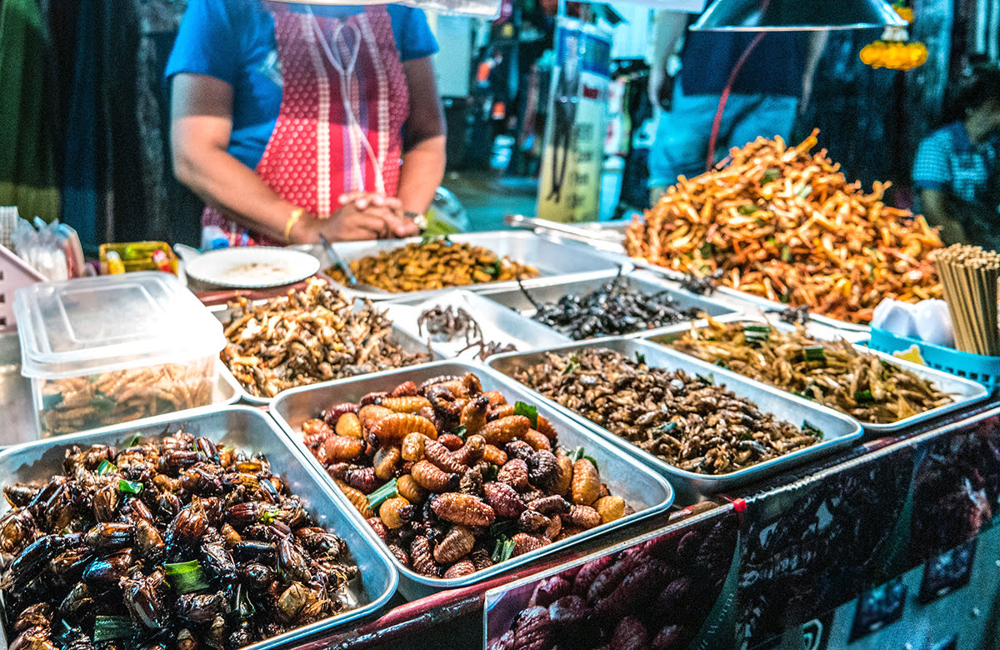

5 ถนนข้าวสาร
ถนนข้าวสาร คือย่านสำคัญใน กรุงเทพ สำหรับแบคแพคเกอร์ เรียกได้ว่าเป็นจุดหมายปลายทางในฝันของนักเดินทางที่มีงบประมาณจำกัด และนักเดินทางแบกเป้เที่ยวในเอเชียตะวันออกเฉียงใต้ส่วนใหญ่ก็มักจะมาแวะที่ กรุงเทพ และแวะที่ ถนนข้าวสาร ถนนที่มีชีวิตชีวาและพลุกพล่านแห่งนี้มีความยาวประมาณ 1 กิโลเมตร และเต็มไปด้วยโฮสเทล บาร์ ร้านอาหารริมทาง และร้านค้าต่างๆ ที่รองรับผู้ที่มีงบประมาณจำกัด